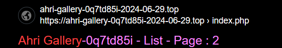

网站失联了怎么办？
设想一个场景：有一个网站你每天都在用，结果有一天它突然打不开了
发生这种事情确实很令人崩溃
不放让我们想一想究竟是什么原因造成了网站打不开 *
- 网站域名更换
- 网站维护
- 网站跑路了
一般情况下都是因为网站域名更换导致网站打不开
这里用下面的网站来演示具体哟怎么操作
我们观察这个网站的域名，发现它非常长，而且里面貌似还有日期信息，这种网站的域名会经常更换
那么我们该如何找到网站的最新域名呢？
鉴于不少网站都有自己的地址发布页，域名发布页的地址一般不会改变，你要做的就是找到你正在用的网站的地址发布页，比方说禁漫天堂，下面就是它的地址发布页：
然而有的时候总是事与愿违
我用的网站没有地址发布页怎么办？
此时应该查找网站的关键信息，例如网站标题，网站的名字等。然后放到搜索引擎上搜索
以这个地址举例:
https://ahri-gallery-xfjd-2024-04-25.top/
注意到Ahri
Gallery这几个单词很显眼，说不定就是网站的名字
上bing搜一搜Ahri
Gallery，注意这里必须要使用bing，因为百度，360等搜索引擎返回的垃圾信息太多了
结果如下，只需找到名称与源地址相似的新地址即可。

可见，Ahri Gallery的新地址如下：
https://ahri-gallery-0q7td85i-2024-06-29.top
网站的标题也可以用来检索网站
例如cin.ac打不开了，这个地址十分简短，能获得信息很少，此时应该打开浏览器历史记录，寻找一条访问这个网站时留下的记录
通过浏览器历史记录显示页面标题的特性，获得该页面的标题为
Download or Watch your favorite doujin
直接去浏览器搜索即可
如果你用尽了所有办法仍然没能找回失联的网站
不要伤心，学会放下，在搜索过程中你会遇到更多新的网站，欣赏沿途的风景，何尝不是「找回失联」的另一种形式